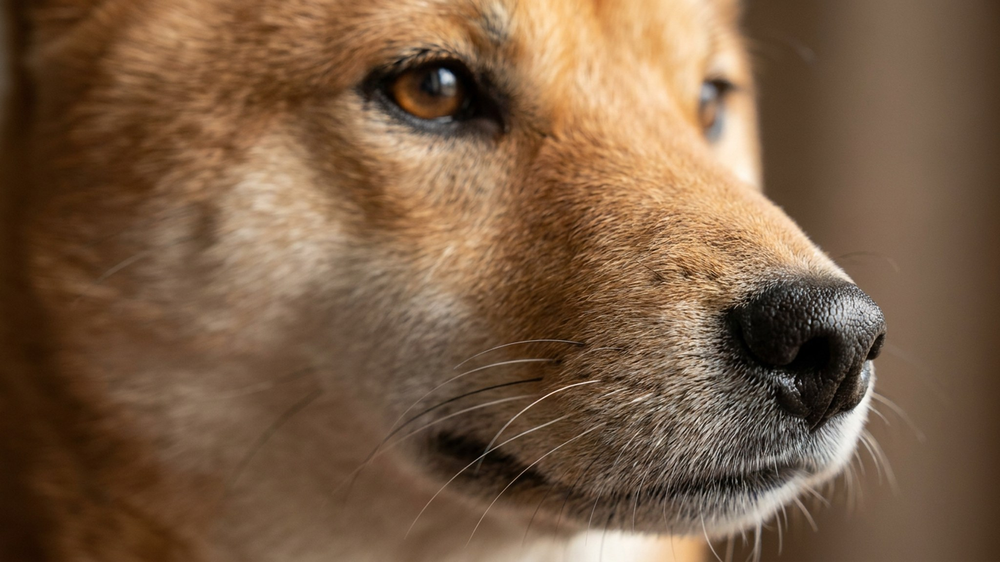

Вы зовёте — пёс смотрит прямо на вас и разворачивается в другую сторону. Знакомая сцена для каждого владельца сиба-ину. Это не дерзость и не сломанное воспитание: у породы тысячелетняя история самостоятельной охоты, и голос хозяина в иерархии инстинктов стоит ниже запаха белки. Хорошая новость — отзыв можно выстроить, если работать с природой собаки, а не против неё.
🐾 Не уверены, что это опасно?
Опишите симптом в AnimaLife — AI-ветеринар за минуту подскажет, что в пределах нормы, а когда пора к врачу.
Сиба-ину — одна из древнейших пород Японии, выведенная для самостоятельной охоты в горах. Собака принимала решения без участия человека: преследовать, атаковать, уйти. Этот инстинкт никуда не делся. Когда сиба чует интересный запах или видит движущийся объект, концентрация переключается полностью — зов хозяина буквально не проходит через фильтр возбуждения.
Это не вредность и не доминирование. Это порода. Сиба-ину в целом менее ориентированы на человека, чем лабрадоры или бордер-колли: им не нужно постоянное одобрение, они комфортно существуют автономно. Принять этот факт — первый шаг к нормальным отношениям.
Пока отзыв не стопроцентно надёжен — сиба не гуляет без страховки. Это не ограничение, а безопасность: охотничий инстинкт включается мгновенно, и даже хорошо обученная собака может сорваться за кошкой или велосипедом.
Главное правило: зов всегда означает что-то хорошее. Никогда не зовите собаку, чтобы забрать её с прогулки, наказать или сделать что-то неприятное — это разрушает отзыв быстрее всего.
Сиба-ину с нерастраченной энергией хуже слышит команды и активнее ищет самостоятельные развлечения. Минимум — час физической нагрузки в день плюс задачи для ума: нюхательные коврики, конги с едой, тренировки с кликером.
Упрямство породы лечится только через мотивацию. Давление, повторение команд в раздражении и физические наказания у сиба дают обратный эффект: собака закрывается или начинает избегать контакта. Знаменитый «крик сиба» — пронзительный вой при недовольстве — сигнал, что собаку принудили, а не убедили. Работайте через интерес: чем выгоднее вам, тем охотнее сиба-ину сотрудничает.
🐾 Питомец ведёт себя странно?
AnimaLife расшифрует поведение кошки и собаки и подскажет, что делать. Попробуйте бесплатно прямо в мессенджере.
🐾 Понравился разбор?
Подпишитесь на канал — каждый день разбираем по одному тревожному симптому у кошек и собак: что в пределах нормы, а когда пора к врачу. Подпишитесь, чтобы не пропустить разбор, который может спасти здоровье вашего питомца.
Материал носит информационный характер и не заменяет очную консультацию ветеринара.